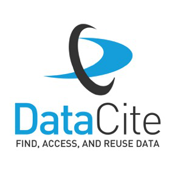

Motivation
Research relies heavily on scientific software, and a large and growing fraction of researchers are engaged in developing software as part of their own research (Hannay et al 2009). Despite this, infrastructure to support the preservation, discovery, reuse, and attribution of software lags substantially behind that of other research products such as journal articles and research data. This lag is driven not so much by a lack of technology as it is by a lack of unity: existing mechanisms to archive, document, index, share, discover, and cite software contributions are heterogeneous among both disciplines and archives and rarely meet best practices (Howison 2015). Fortunately, a rapidly growing movement to improve preservation, discovery, reuse and attribution of academic software is now underway: a recent NIH report, conferences and working groups of Force11, WSSSPE & Software Sustainability Institute, and the rising adoption of repositories like GitHub, Zenodo, figshare & DataONE by academic software developers. Now is the time to improve how these resources can talk to each other.
What can software metadata do for you?
What metadata you want from software is determined by your use case. If your primary concerns are credit for academic software, then you’re most interested in citation metadata. If you’re trying to replicate some analysis, you worry more about versions and dependencies than about authors and titles. And if you seek to discover software you don’t already know about that is suitable for a particular task, well then you are interested more in keywords and descriptions. Frequently, developers of scientific software, repositories that host that software, and users themselves are interested in more than one of these objectives, and others besides.
Different software repositories, software languages and scientific domains denote this information in different ways, which makes it difficult or impossible for tools to work across these different sources without losing valuable information along the way. For instance, a fantastic collaboration between GitHub and figshare provides researchers a way to import software on the former into the persistent archive of the latter, getting a permanent identifier, a DOI in the process. To assign a DOI, figshare must then pass metadata about the object to DataCite, the central DOI provider for all repositories. While this makes DataCite a powerful aggregator, the lack of a crosswalk table means that much valuable metadata is currently lost along the way, such as the original software license, platform, and so forth. Any tool or approach working across software repositories faces similar challenges without a crosswalk table to translate between these.
For more detail, visit the project on GitHub or check back here soon.
Special thanks to our supporters
